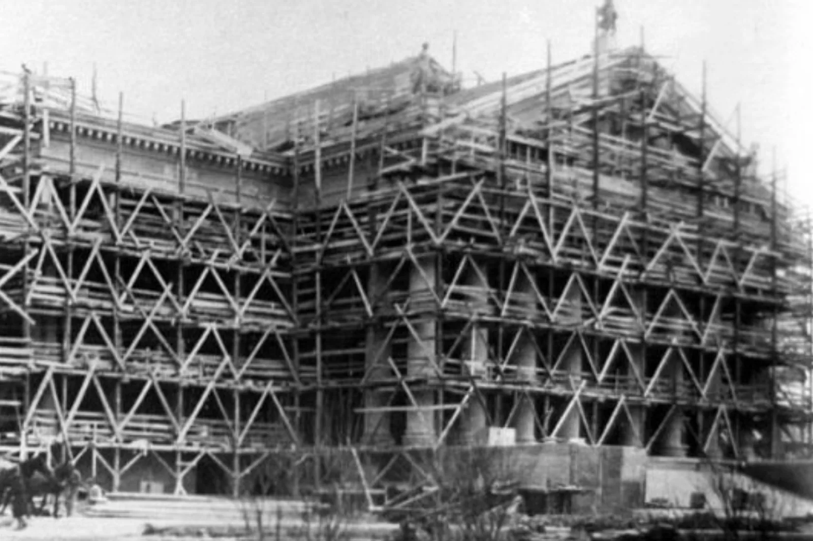
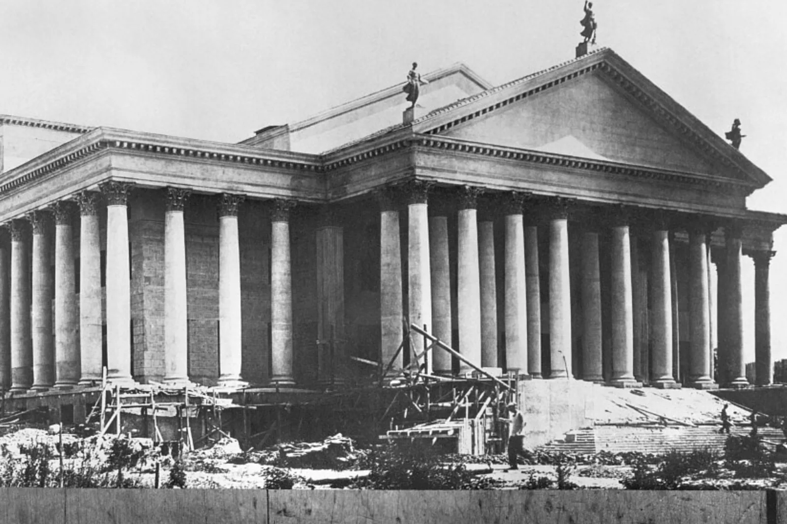
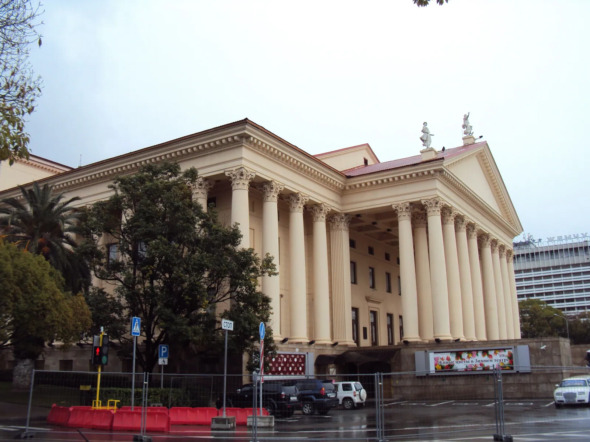
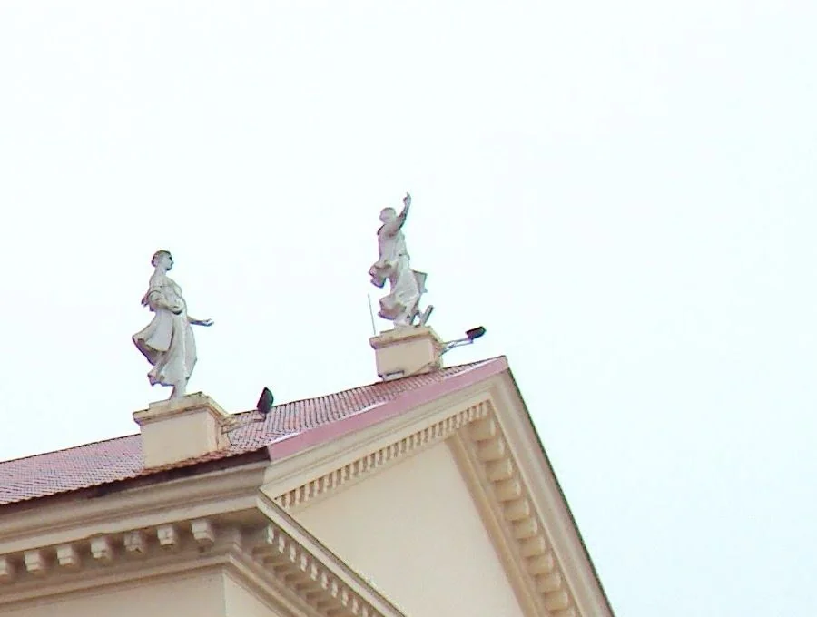

«Граждане СССР имеют право на отдых».
Конституция СССР, статья 119. Принята 5 декабря 1936 года
Глава шестая
1937
Зимний театр
Право на отдых записали в Конституцию, а для отдыхающих построили театр, похожий на древнегреческий храм.
Театральная площадь, 2




- Сентябрь 1934 года: стройка начинаетсяПроект выбрали на конкурсе: первую премию получил молодой архитектор Константин Чернопятов
- 1936. Здание в лесахСтатуя на коньке уже стоит. Все четыре архивных кадра сняты с одной точки и совмещены по ней. PastVu № 575427
- Слева колоннада уже стоит, справа фронтон ещё в лесахСнимок 1936–1937 годов. Журнал «Архитектура СССР», 1937, № 6. PastVu № 2402597
- 1937. Колонны и фронтон готовы, у лестницы остались лесаНа крыше — три скульптуры. Выставка МУАР, PastVu № 2091807
- 11 ноября 1937 года стройку закончилиВокруг ещё стройплощадка: рабочие, трубы, груды земли. Снимок 1937–1938 годов, PastVu № 334144
- 15 мая 1938 года — первый спектакльОпера Римского-Корсакова «Царская невеста» в постановке театра имени К. С. Станиславского
- 2014. Та же сторона здания, но ближе и левееТочка съёмки другая, кадры не совмещены. Фото: Kemal KOZBAEV, CC BY-SA 3.0
До театра настоящей сцены на курорте не было. Теперь у отдыхающих появилось здание, похожее на древнегреческий храм, и стояло оно на обрыве над морем.
Что это
Главный театр Сочи
Зимний театр — большое здание с колоннадой и треугольным , похожее на древнегреческий храм. Оно стоит на краю старого центра, на обрыве над морем.
Театр построили в 1934–1937 годах, первый спектакль сыграли в мае 1938-го. Сегодня здесь работают театр и Сочинская филармония.
- Где
- Театральная площадь, 2, центр Сочи
- Архитектор
- К. Н. Чернопятов; консультанты В. А. Щуко и В. Г. Гельфрейх
- Стройка
- Сентябрь 1934 — 11 ноября 1937
- Открытие
- 15 мая 1938
- Колонны
- 88 по современным описаниям, 90 по очерку 1950 года
- С 1968 года
- Здесь работает Сочинская филармония
- Охрана
- Памятник архитектуры федерального значения
Как это появилось
Сцена для всесоюзной здравницы
До 1933
Настоящей сцены в Сочи не было. Единственное закрытое театральное помещение на весь курорт, как писал архитектор Н. Б. Соколов в очерке 1950 года, было «похоже на бесформенный сарай».
1933
Утвердили первый реконструкции Сочи-Мацестинского курорта. По словам сотрудницы Музея истории города, к 1941 году его выполнили: на месте небольшого города появился почти новый. Театр стал одним из главных общественных зданий этого плана.
1934
Проект выбирали на конкурсе. Первую премию получил молодой архитектор Константин Чернопятов (1900–1978). Владимир Щуко и Владимир Гельфрейх, которые тоже участвовали в конкурсе, стали его . Есть легенда, что проект лично выбрал Сталин; музейный сотрудник, который её пересказывает, оговаривается, что подтвердить или опровергнуть её нельзя.
1934–1937
Строили с сентября 1934 по 11 ноября 1937 года. Снимки показывают, как растёт здание: сплошные леса, потом колоннада, затем крыша из керамической черепицы, на которой уже стоят скульптуры. По данным краеведов, стройка, оборудование и благоустройство обошлись примерно в 11 миллионов 50 тысяч рублей.
5 декабря 1936
VIII съезд Советов принял новую Конституцию СССР. Статья 119 закрепила право на отдых, статья 120 обещала трудящимся «широкую сеть курортов». Закон называл отдых правом трудящихся, а не милостью власти, и театр строили в рамках той же идеи: культура и отдых для всех работающих.
1937
Право было записано в законе, но курорты Сочи служили не только трудящимся: в Мацесте в 1937 году по проекту Мирона Мержанова построили личную дачу Сталина (с 1959 года в ней санаторий «Зелёная Роща»). Стройку театра закончили 11 ноября 1937 года, в разгар Большого террора — массовых политических репрессий 1937–1938 годов. Идея «отдых для трудящихся» и реальность 1930-х — разные вещи; сравните их сами. Пересказ статей Википедии «Мацеста (Сочи)», «Зимний театр (Сочи)» и «Большой террор».
15 мая 1938
Первый спектакль: опера Римского-Корсакова «Царская невеста» в постановке Московского театра оперы и балета имени К. С. Станиславского.
1968–2022
С 1968 года в здании работает Сочинская филармония. Театр стал памятником архитектуры федерального значения. При ремонтах керамическую черепицу заменили красной металлической кровлей, в 2022 году поставили новые кресла и новый железный занавес.

Закон, 1936
«Статья 119. Граждане СССР имеют право на отдых. Право на отдых обеспечивается сокращением рабочего дня для подавляющего большинства рабочих до 7 часов, установлением ежегодных отпусков рабочим и служащим с сохранением заработной платы, предоставлением для обслуживания трудящихся широкой сети санаториев, домов отдыха, клубов».
- Статья 120
- Право на обеспечение в старости и болезни обещано, среди прочего, «предоставлением в пользование трудящимся широкой сети курортов».
- Как читать
- Закон описывает не только право, но и то, чем государство его обеспечит: санатории, дома отдыха, клубы. Зимний театр — такое обеспечение в камне.
- Осторожно
- Позже статью 119 изменили (например, вместо семичасового появился восьмичасовой рабочий день), поэтому цитировать нужно первоначальную редакцию.

Колоннада вечером, в морском тумане
Фото: Илья Бунин, 2012, CC BY-SA 4.0
11 ноября 1937
Стройку театра закончили. Шёл Большой террор.
1937–1938 — годы массовых политических репрессий в СССР. Википедия: «Зимний театр (Сочи)», «Большой террор»
Архив и сегодня
Театр за восемьдесят лет
На что посмотреть
Пять вещей у театра
-
1
Колонны: 88 или 90?
Здание опоясывает колоннада . Современные описания насчитывают 88 колонн, очерк 1950 года — «90 коринфских колонн, поставленных вокруг двухэтажного прямоугольного корпуса». Посчитайте сами и решите, как считать угловые колонны и колонны портика.
Фото: Ivanaivanova, CC BY-SA 3.0
-
2
Лестница-трибуна
К ведут 35 ступеней в два марша, по бокам каменные выступы. По очерку 1950 года, их рассчитали так, чтобы вход можно было использовать как трибуну на праздничных демонстрациях. На снимке 9 мая 1945 года здесь идёт митинг.
-

3
Терраса с видом на море
Колонны портика стоят в два ряда, перед входом получается терраса с видом на море. Архитектор задумал её как открытое фойе: в антракте можно выйти на воздух и посмотреть на ночное небо и освещённый пароход (так замысел описан в очерке 1950 года).
Фото: Евгений Лодянов, CC BY-SA 4.0
-

4
Три фигуры на крыше
На фронтоне стоят «Живопись», «Ваяние» и «Зодчество». У «Живописи» когда-то была кисть, сейчас руки пусты. Кто их автор — в разделе «Факт» ниже.
Фото: Kemal KOZBAEV, CC BY-SA 3.0, фрагмент. Авторство — по статье И. Ю. Злизина (2022) и документам РГАЛИ, на которые ссылается Википедия
-
5
Крыша была другой
На снимках 1937 года рабочие кладут керамическую черепицу. Сейчас кровля красная, металлическая. Сравните цвет и фактуру на старых и новых снимках в галерее.
Музей истории города-курорта Сочи. PastVu № 1812053

Значение для Сочи
С 1938 года у курорта есть настоящая театральная сцена, и она остаётся главной в городе.
Значение для России
Идея 1930-х годов в камне: отдых и культура для трудящихся — дело государства. Право на отдых записали в Конституцию, а курортам строили здания такого масштаба.
Разделы курса: 2. Российское государство-цивилизация, 4. Политическое устройство России
Ценность: созидание и развитие
Факт, который мало кто знает
Фигуры на фронтоне обычно приписывают Вере Мухиной, так написано даже в перечне памятников. На самом деле «Живопись» создала Людмила Ефимова (Шулик), а «Ваяние» и «Зодчество» — Надежда Вентцель.
Скульптуры на крыше, 2014. Фото: Kemal KOZBAEV, CC BY-SA 3.0, фрагмент. Авторство — по статье И. Ю. Злизина (2022) и документам РГАЛИ, на которые ссылается Википедия
Что вы узнали
Три вещи о Зимнем театре
Три года стройки
Театр строили с сентября 1934 по ноябрь 1937 года по проекту Константина Чернопятова; первый спектакль сыграли 15 мая 1938 года. Здание входило в генплан Сочи-Мацесты 1933 года.
Право, записанное в законе
Конституция 1936 года записала право на отдых и «широкую сеть курортов». Курортная архитектура 1930-х была частью государственной политики, а не только украшением.
Проверяйте справочники
Скульптуры на фронтоне часто приписывают Мухиной, хотя их сделали Ефимова-Шулик и Вентцель, а колонн насчитывают то 88, то 90.
Проверьте себя Какая статья Конституции 1936 года обещала трудящимся «широкую сеть курортов»?
Статья 120. Статья 119 — о праве на отдых: семичасовой рабочий день, отпуска, санатории, дома отдыха и клубы.
Источники главы Статьи, документы и авторы снимков
- Конституция СССР 1936 года, первоначальная редакция. Викитека.
- Н. Б. Соколов. Сочи-Мацеста: Архитектурный очерк. М., 1950. Цитаты по публикации «Архитектура Сочи», 2012; книгу мы не видели.
- Зимний театр на Кавказской Ривьере: интервью с А. Гусевой, Музей истории города Сочи. «Архитектура Сочи», 2010.
- Википедия: Мацеста (Сочи) (дача Сталина), Большой террор.
- Википедия: Зимний театр (Сочи), К. Н. Чернопятов, Л. И. Ефимова, Н. К. Вентцель, Конституция СССР 1936 года.
- Архивные снимки PastVu: № 575427, № 2402597, № 2091807, № 334144, № 1812053, № 808866, № 1905707, № 2636654; воспроизведены как учебная цитата.
- Современные снимки (Викисклад): Илья Бунин, 2012, CC BY-SA 4.0; Kemal KOZBAEV, 2014, CC BY-SA 3.0; Siverec, 2015, CC BY-SA 4.0; Ivanaivanova, 2013, CC BY-SA 3.0; Евгений Лодянов, 2018, CC BY-SA 4.0; Niklitov, 2018, CC BY-SA 4.0. Титульный лист Конституции: ГА РФ, общественное достояние.